Research update · 3 November 2026
LLMZIP: what we found so far
Can an AI assistant read less of its own conversation history and still answer correctly? A plain-language map of every recent test, with the numbers behind it.
01 / The short version
When an assistant answers a question about an old conversation, it first searches its memory and then gives a reader model the pieces it found. LLMZIP asks two things: can we give the reader fewer words without losing correct answers, and can the search itself get better or cheaper?
~23%
fewer input tokens for the reader on successful calls when the found text was shortened, on LongMemEval-S (questions already seen, so not a clean test).
19.55%
saving on a fresh, held-out ConvoMem test with rules fixed in advance: just under the pre-set 20% bar, so the verdict is inconclusive.
0
candidates promoted. The default setup is unchanged. Search and speed ideas either missed their fixed rules or cost far too much.
In one sentence: trimming the context saves roughly a fifth to a quarter of the reader's input with only a small observed drop in correct answers, but this has not yet been shown on data the project has never seen, and no claim of “no loss” or “equivalent” is made.
02 / Map of the tested lines
Word stemming + cache
Search slightly better; outputs unchanged while stemming ran 8.2× faster.
Shortened context, held-out
ConvoMem, 500 questions: 347 vs 350 correct; saving 19.55% < 20% bar.
Shortening pilot A/B/C
LongMemEval-S, 487 questions: 419 / 417 / 414 correct; ~23% fewer reader tokens.
Semantic hybrid search
Found more evidence (337 vs 323 of 400) but used 139–234× the CPU; cap was 5×.
INT8 encoder
Document CPU −19.84% against a required −20%.
FP32 graph fusion
Document CPU −6.97% (needed −20%); query CPU +10.23% (allowed +10%).
Lexical search tweak, round 2
379 synthetic questions: 289 vs 288 with all evidence in the top 5.
Query expansion
250 unseen questions: 207 vs 205 correct; gain not confirmed.
PRF & single-snippet selection
Development gains did not repeat on the locked test; snippets lowered accuracy.
Does the saving carry over?
Only testable on brand-new data, in one run with rules locked in advance.
03 / Shortening what the reader sees
Three versions of the same five retrieved conversations were given to the same reader model on 487 LongMemEval-S questions: A the full text, B an older selector that keeps about 75% of it, and C a newer packer that keeps whole question–answer exchanges. B and C answered 2 and 5 fewer questions correctly than A, while the reader read about 23% fewer tokens.
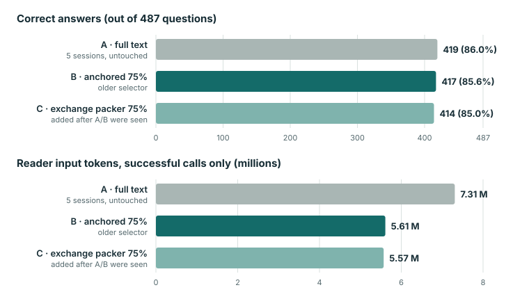

04 / The held-out test (ConvoMem)
To check the shortening on questions the project had never used, a single run was done on 500 ConvoMem questions, with the pass rules written down before any model call (not entered in a public registry). The shortened arm answered 347 correctly against 350 for the full text. No measurable drop was shown, but the token saving was 19.55%, just under the 20% that was required in advance, and the bar was not moved afterwards.
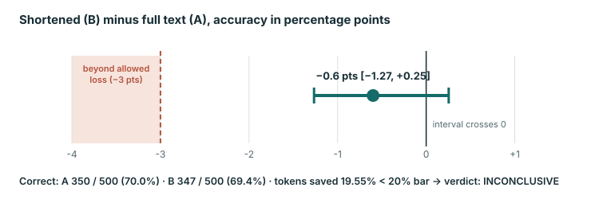
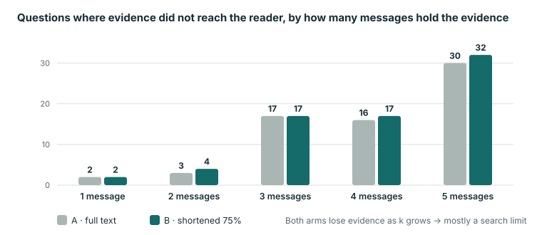
05 / Why shortened answers went wrong
A follow-up look at the wrong answers in the shortened arms found one main pattern: the needed fact was simply not in the shortened text. Most of these were questions that require collecting or counting items scattered over several sessions. The two arms also behaved differently when the fact was missing.
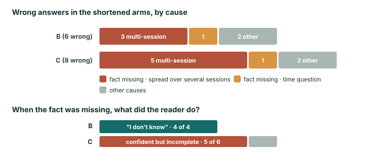
06 / Can the search itself improve?
Better search does not automatically mean better answers. The biggest jump in accuracy in this programme came from changing the reader model, not from any search change.
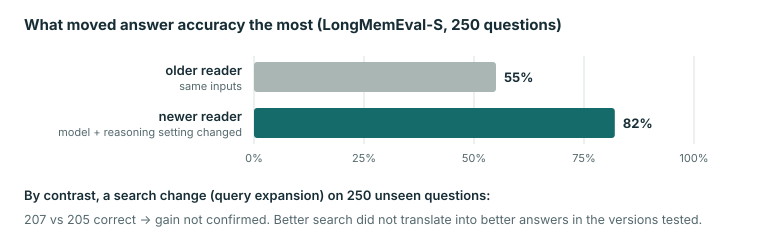
A semantic hybrid (adding a small embedding model to the word-based search) did find more of the needed evidence on 400 synthetic ConvoMem questions, but at a computing cost far above what was allowed.
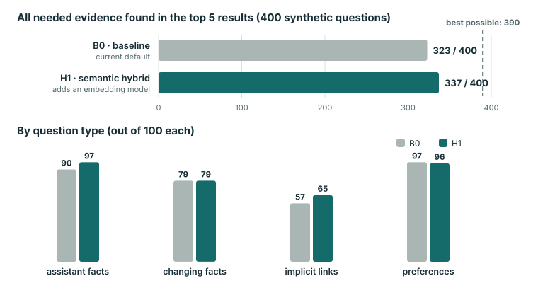
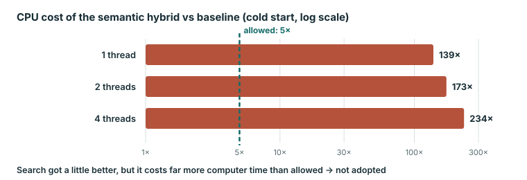
07 / Making it faster
Two engineering attempts tried to make the embedding step cheaper. Both were judged against rules fixed before measuring. Neither passed, and two of the three checks missed by a fraction of a percent; the rules were not rounded or relaxed.
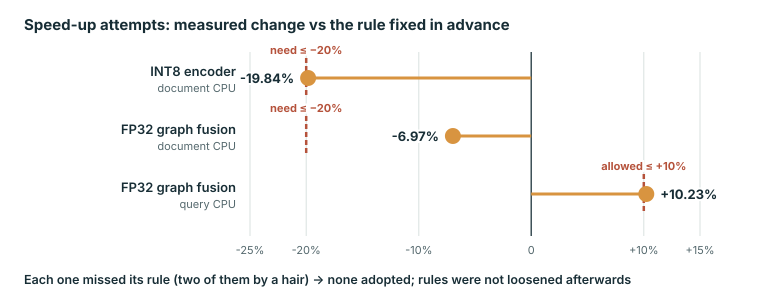
08 / The 12-byte code paper
The earlier part of the programme asked whether a tiny 12-byte code per document could replace a standard BM25 word index. It could not. The paper's most useful lesson is about method: five ordinary setup choices each flipped a verdict on their own. Figures below are from the public paper repository (CC BY 4.0).
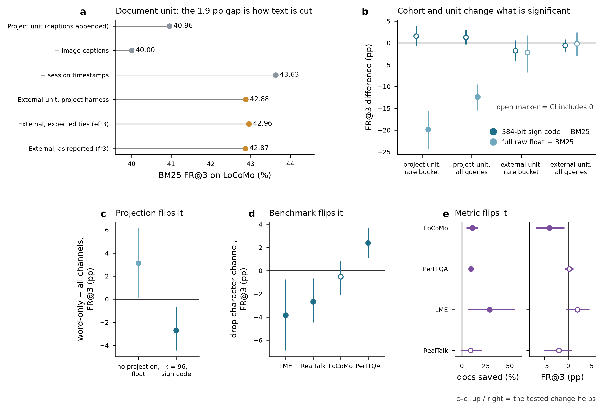
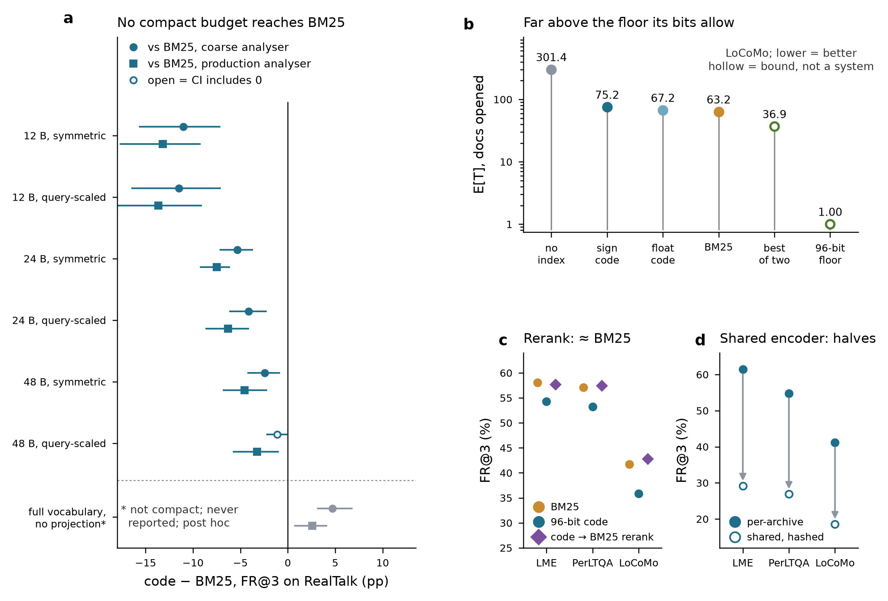
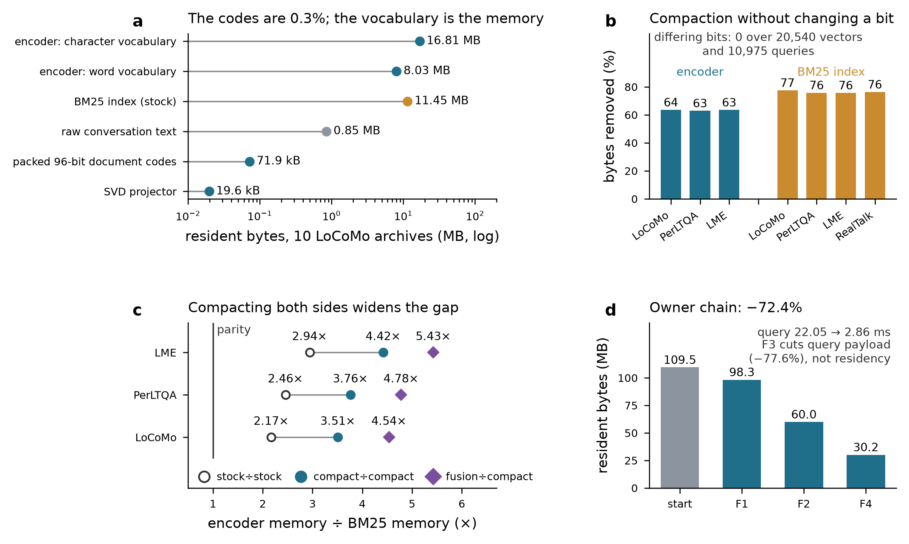
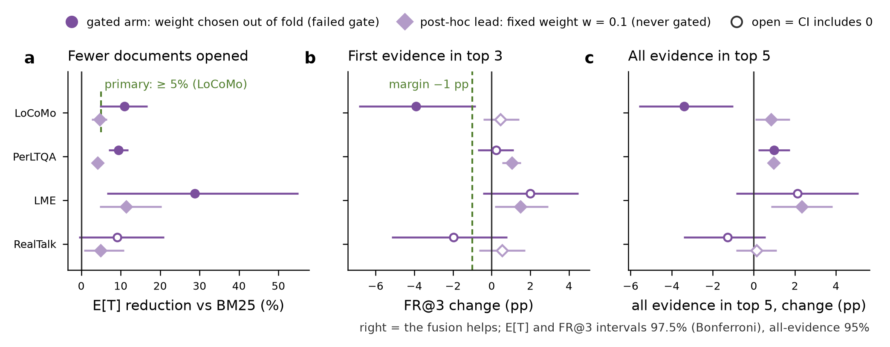
09 / What still holds, what does not, what is open
Useful
- Shortening the retrieved text cuts the reader's input by roughly 20–24% in every test so far, with a small observed drop in correct answers.
- When answers fail after shortening, it is mostly because a fact spread across several sessions was left out — a concrete target for the next design.
- Two lossless compactions shrink memory use without changing any result.
Does not hold / withdrawn wording
- “No loss”, “equivalent” and “ceiling” have been withdrawn; the tests cannot support them.
- Token savings are not total cost savings: output, failures, search and grading are not counted.
- The compact code does not beat BM25; an earlier “+10 points” sign-code-over-float headline was retracted.
Open
- Does the ~23% saving carry over to data never seen before? This needs new data, one run, rules locked in advance.
- Can a shortener keep facts that are spread over several sessions?